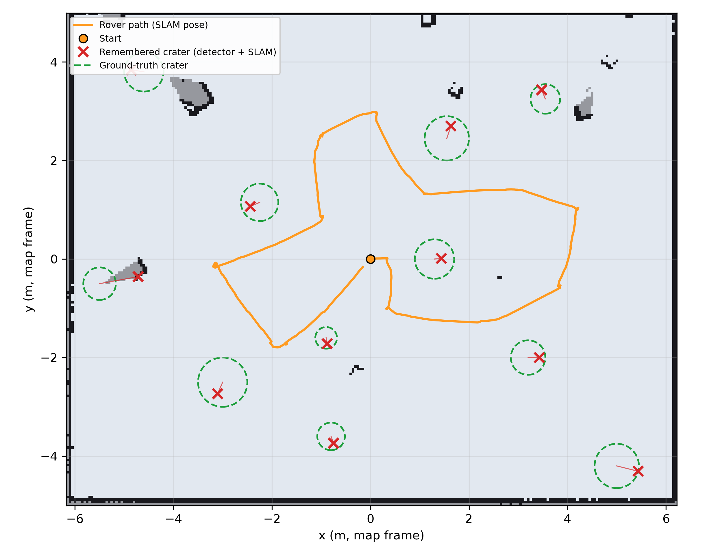
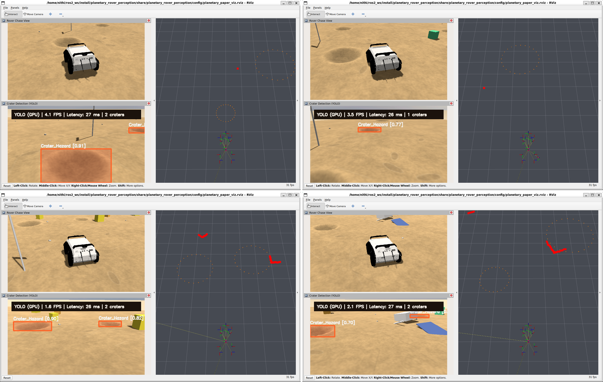
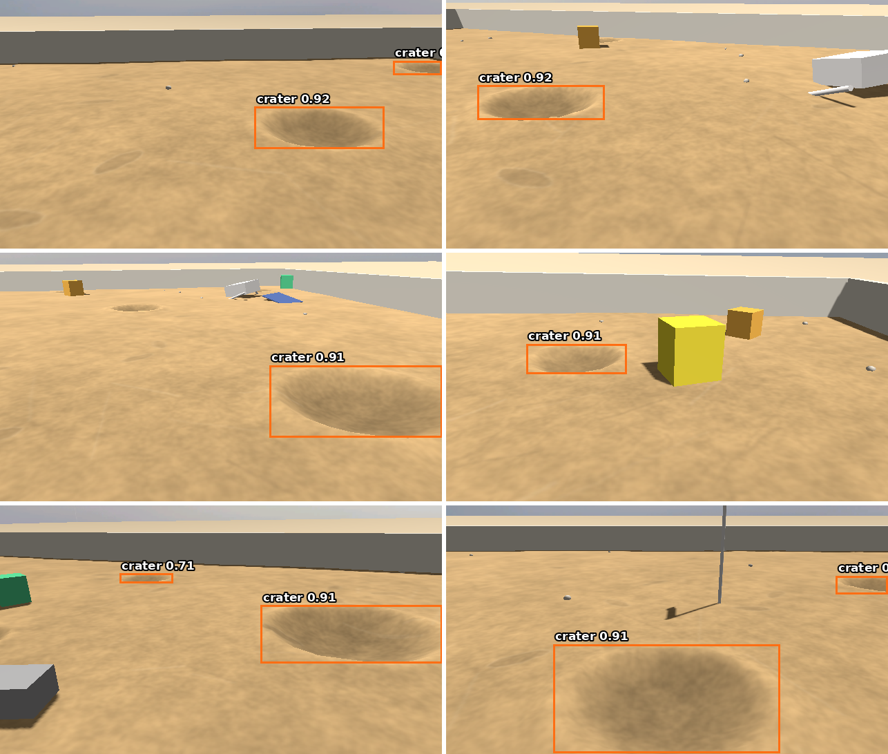
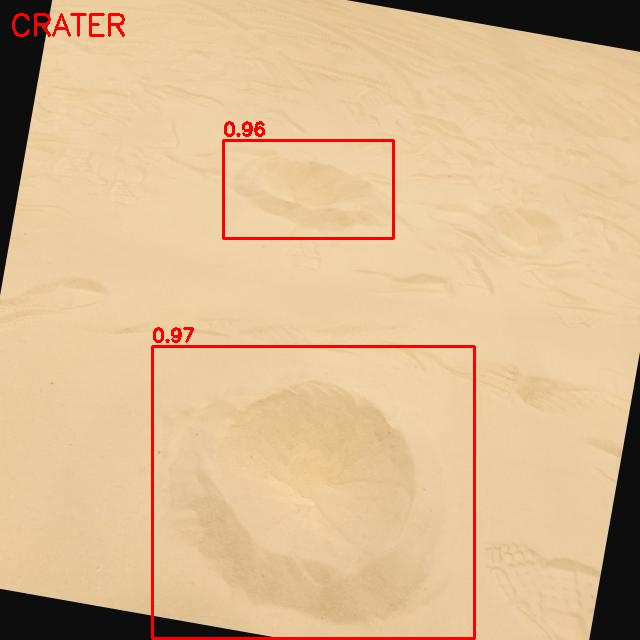
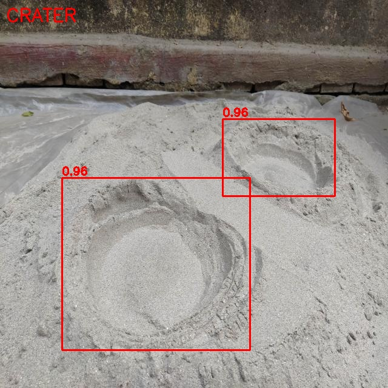
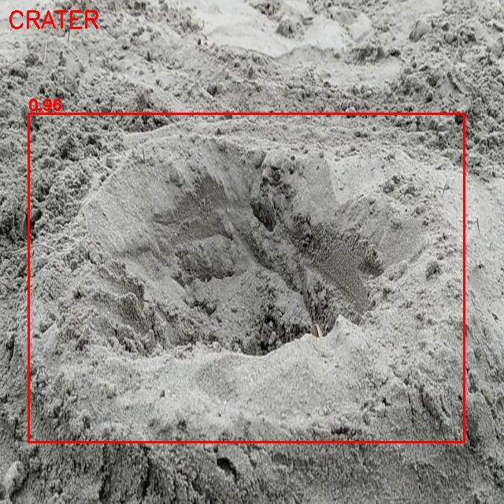

Hi, I'm Nithin N, a third-year Electrical & Electronics Engineering student at NITK Surathkal with a Minor in Machine Learning. My work sits at the intersection of computer vision, edge AI and robot learning. Alongside this rover project, I am a research project member at Carnegie Mellon University working on longitudinal Alzheimer's neuroimaging, and I have trained a reinforcement-learning policy that keeps a Unitree A1 quadruped standing on sloped terrain in MuJoCo. I am also a core member of Robotech NITK and a technical mentor at the Web Enthusiasts Club.
For the 2027 CAC challenge at IIT Madras, I am the captain of Team NITK Caterbots. I also own the perception stack: crater detection, localization, SLAM integration and the persistent crater map. That means the job is not only to make one subsystem work, but to align the team's mechanical, electrical, software and autonomy decisions around a rover that can survive the full mission. In the earlier Caterpillar Rover Challenge at IIT Madras, our team finished in the top 10 of 1,922 teams. This article is a deeper account of the system, the failure modes and the evidence behind the numbers.
A rover does not fail because a crater is visually interesting. It fails when a perception error becomes a planning error: a hazard is missed, a false obstacle blocks a route, or a repeated observation is interpreted as a new object. Our design question was therefore more specific than “can a neural network detect craters?”
Can a resource-constrained rover estimate its pose, detect shallow hazards and accumulate those detections into a metrically useful map, using a LiDAR, a camera and onboard compute?
1. Problem formulation: perception under partial observability
The arena is an enclosed sand field containing craters of different sizes, foam-cube obstacles and landmarks. The rover must explore the scene while maintaining enough geometric consistency to reason about what it has already seen.
At time t, the robot has a noisy sensor observation zt, a control input ut and a latent state containing its pose and the locations of hazards. In a compact SLAM notation, the system is estimating:
xt = [x, y, θ]T ∈ SE(2), m = {c1, c2, ..., cn}
Here, xt is the rover pose in the planar map frame and m is the set of persistent crater hypotheses. The challenge is that the sensors are complementary rather than interchangeable. The LiDAR observes structure at its scan height and is excellent for localization. A crater only a few centimetres deep can be almost invisible to that scan. The camera has the semantic sensitivity we need, but its detections are image-space measurements with uncertain depth.
That led to the central division of responsibility: LiDAR and wheel odometry establish geometric context; the camera proposes semantic hazards; the map layer decides whether those proposals deserve memory.
2. System architecture
2.1 Localization with LiDAR, odometry and SLAM
We used slam_toolbox on ROS 2 Jazzy. Wheel odometry supplies a short-term motion prior, while LiDAR scan matching constrains drift against the observed environment. The resulting occupancy grid used a 5 cm resolution, which was a practical compromise between representing the arena and keeping the map computationally manageable.
In the planar setting, a scan point is transformed through the current pose estimate using the rigid-body transform:
T(x, y, θ) = [ cosθ -sinθ x ; sinθ cosθ y ; 0 0 1 ]
The important engineering detail is not the matrix itself; it is frame discipline. A detector can be accurate in pixels and still be useless if a camera-frame point is fused into the map frame with a stale transform, a wrong axis convention or an incorrect timestamp. ROS transforms and synchronized timestamps were therefore part of the perception system, not plumbing to be added later.
2.2 Semantic perception with a single-class detector
We fine-tuned a YOLO detector with one class: crater. The training set combined 374 simulated frames with 300 real photographs of craters in sand. Simulation gave us an unusual advantage: the simulator knows the ground-truth crater geometry, so bounding boxes could be generated by projecting known crater positions through the camera model rather than annotating every frame by hand.
This is a form of privileged-label generation. The training pipeline can use information unavailable to the deployed rover, such as exact object coordinates in the simulated world, while the deployed model receives only RGB pixels. It reduces annotation cost, but it does not remove the sim-to-real problem: texture, illumination, sand granularity, camera response and crater morphology still create a domain gap.
2.3 From a 2D box to a map-level hypothesis
A detector returns a bounding box, confidence score and class label. It does not directly return a metrically reliable crater centre. We selected a representative image point, projected it onto the ground assumption, converted it into the map frame and then associated it with existing hypotheses.
For a pinhole camera, the back-projection begins with the normalized ray:
pground = o + λrc, where pground,z = 0
The scalar λ is determined by the camera pose and the ground-plane intersection. In the arena this approximation is useful, but it also explains why a visually correct detection can still produce a bad map point: any error in camera pitch, camera height, rover pose or the assumed local ground plane propagates into the estimated crater position.
We used a conservative temporal memory rule. A detection was not immediately promoted to a persistent crater. It had to be observed again and fall within 70 cm of an existing hypothesis. This is a lightweight form of data association with hysteresis: it suppresses isolated false positives while allowing repeated views of the same crater to reinforce one another.

3. The failure that exposed our measurement model
Our first geometric heuristic placed the crater at the bottom edge of the detection box. That rule is often reasonable for an upright object whose contact point is near the lower image boundary. It is not reasonable for a crater: the bottom edge tends to represent the near rim, not the crater's geometric centre.
The consequence was systematic bias rather than random noise. Estimates were pulled toward the rover, two phantom craters appeared, and the mean position error reached 41 cm. Replacing the bottom-edge point with the centre of the detection box reduced the mean error to 28 cm and removed the false craters in the evaluated run. A repeat run produced 0.277 m versus 0.279 m, suggesting the improvement was not just a lucky trajectory.
This was a useful reminder that a perception pipeline is not only a detector. The detector, camera model, frame transforms, association rule and evaluation protocol together define the measurement model. A high-confidence box can still become a low-quality landmark if the downstream geometry encodes the wrong physical assumption.
4. Results
Across a 22.8 m simulated tour, all 11 craters were found and localized. Detector mAP50 was 0.866 on simulated frames and 0.957 on a held-out set of 29 real sand-crater photos. During development, inference on an RTX 4050 took approximately 24–34 ms per frame. That GPU was not part of the rover deployment.
The real platform was a Raspberry Pi 5 with a Hailo AI HAT. The deployed detector sustained 24 FPS and reached 32 FPS peak. These measurements describe detector throughput, not the end-to-end latency of SLAM, projection, association and navigation. Keeping those quantities separate matters: a fast detector does not automatically imply a fast or safe robot.


5. Edge deployment: from floating point to an accelerator
The laptop experiment and the rover experiment were different engineering problems. On the laptop, the question was whether the model could learn the visual signature of a crater. On the Raspberry Pi, the question became whether the trained graph could survive quantization, compilation and runtime constraints on a Hailo accelerator.
Quantization replaces higher-precision representations with lower-precision ones so that the network can execute efficiently on dedicated hardware. The danger is not merely a small change in confidence. Quantization can alter activation distributions, expose unsupported operators, or amplify errors in layers that are sensitive to small numerical changes. Compilation adds another constraint: the model must be expressible in the accelerator's supported graph and memory model.
I spent days calibrating the model, debugging compile and runtime failures, and tracing issues across the model export, accelerator toolchain, drivers and camera path. The eventual deployment retained detector confidence around 0.95–0.97 on the real crater examples and ran at 24 FPS sustained. The lesson was that edge AI is a systems problem: model architecture, numerical precision, compiler compatibility, thermal headroom and sensor I/O all participate in the final result.



The code for this pipeline is on GitHub: Caterpillar-Rover-iitm.
6. What the numbers do and do not mean
Honest engineering means identifying the boundary of the evidence.
The mapping result comes from ROS 2 and Gazebo Harmonic in one simulated scene and one route. The validation score is optimistic because training and validation frames share the same simulated crater environment. The real-photo test set contains only 29 images, so its 0.957 mAP50 should be read as an encouraging check, not a statistically decisive claim about generalization.
The simulator ran the camera renderer at roughly 3 Hz on the CPU in my setup. That was the bottleneck for the mapping experiment, not the detector's RTX throughput. Conversely, the Hailo measurements are real hardware measurements of detector execution; they do not yet certify the full SLAM plus crater-memory pipeline under rover motion, vibration, lighting change and wheel slip.
We also did not report confidence intervals, cross-scene performance or independent repeated trials at the scale required for a formal benchmark. Those omissions are not cosmetic. They determine whether a result is a reproducible system property or merely a successful demonstration.
7. Next experiments
The next milestone is to run the complete mapping loop on real sand: detector inference, ground projection, transform lookup, crater association and path planning as one measured pipeline. We want to evaluate multiple arena layouts, independent runs and controlled changes in illumination and crater appearance.
Technically, the natural extensions are uncertainty-aware crater tracks, a better ground model for non-planar sand, explicit camera–LiDAR calibration checks and a planner that consumes hazard probability rather than a binary crater point. A crater map should eventually become an actionable cost layer in navigation, not just a visualization overlay.
Thanks to our teammates, mentors and the CAC 2027 organizers at IIT Madras. The most valuable result was not one detector score. It was learning how a small geometric assumption can dominate an entire perception stack.
Tags: Robotics, ROS 2, Computer Vision, SLAM, Edge AI, Sensor Fusion, Sim-to-Real, Machine Learning